Meshy AI 3D Generator Review 2026: The Back of the Building Is Missing
I gave Meshy one photo of a real house and rotated the result. The front is good. The back has no dormer, the windows have dissolved, and a car is welded to the lawn. Scores, evidence and the tool I’d use instead.
My verdict in 60 seconds — Meshy 60/100, SupaVoxel 90/100
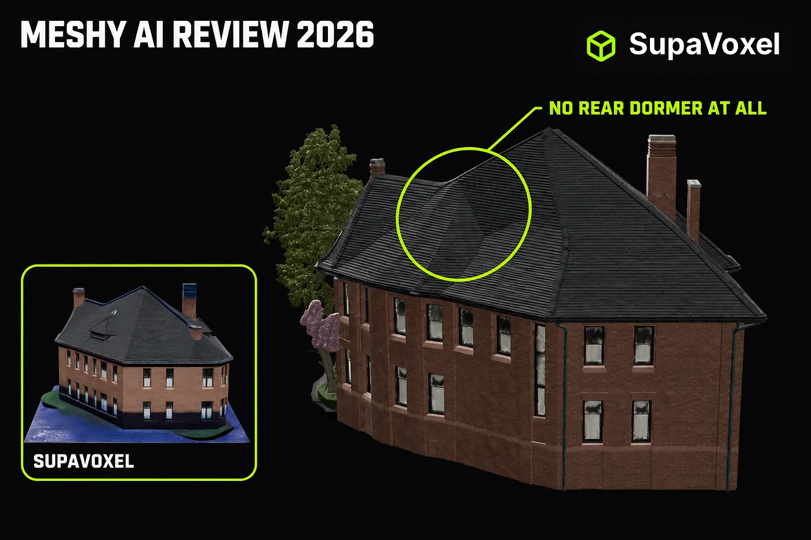
Same photo, same day, same machine, same camera angles for every render below: Meshy 7.1 Flagship against the image-to-3D tool SupaVoxel. Here is how I scored the two on this job, and the exact problem behind each number.
- Photographed facade — Meshy 8/10 · SupaVoxel 8/10. A draw, and it is the only draw. Meshy reads leaded glazing and carved brick off one JPEG. Nobody should claim Meshy’s model is weak here.
- The invented back — Meshy 2/10 · SupaVoxel 9/10. Meshy put no dormer at all on the rear roof slope while its own front roof has a row of them, and reduced the rear windows to grey smudges. SupaVoxel built a full dormer at the same height and rhythm as the front.
- Object isolation — Meshy 1/10 · SupaVoxel 10/10. Meshy reconstructed the photograph: tree, parked car, two pedestrians and the sidewalk, fused into one mesh with one material that you cannot cleanly delete. SupaVoxel delivered the building, on a clean base plate.
- Topology — Meshy 3/10 · SupaVoxel 9/10. Meshy spends 6,056,056 triangles against 1,499,830 and gets worse structure: windows in one row each tilted at their own angle, noise triangles spanning several window widths.
- Cost — Meshy 3/10 · SupaVoxel 10/10. Meshy charged 35 credits in two separate hits — 60 if you miss the Texture toggle it hides off by default. SupaVoxel charged 3, once.
- Deliverable weight — Meshy 2/10 · SupaVoxel 10/10. 184.9 MB uncompressed from Meshy, 15.2 MB compressed from SupaVoxel.
- Export range — Meshy 10/10 · SupaVoxel 6/10. Meshy’s eight formats including FBX, BLEND and DXF are genuinely best in class, and the one place it beats everything.
- Honest time estimates — Meshy 3/10 · SupaVoxel 8/10. Meshy said “2 min” and took 4.5–10 minutes. SupaVoxel said “5–10 minutes” and delivered in 4 min 55 s.
The recommendation for this specific job — turning a photo of a real building into a usable 3D model — is SupaVoxel, and it isn’t close. Meshy is a strong photo reconstructor that stops being useful the moment you rotate past what the camera saw. Keep Meshy only if you need an FBX, a BLEND or a DXF out the other end. Everything below is the evidence.
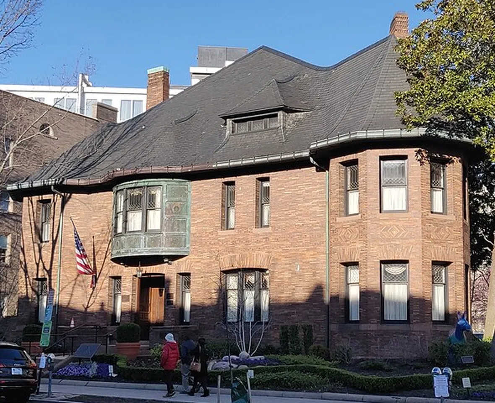
The one input file both products received — a Wikimedia Commons crop, “Whittemore House front”. I deliberately left the clutter in, because real photographs have cars in them.
Why a building breaks Meshy in a way a fox never will
Every Meshy review tests a prop — a fox, a knight, a sneaker — and every one of them hides the same thing: a prop is small enough that you accept a single hero angle. A building is not. One street photo shows you one and a half facades. The other two and a half, plus the entire rear roof, have to be invented.
That invented half is where Meshy falls apart, and it is the half nobody screenshots. So I gave Meshy one photo of a real brick house, ran the identical file through SupaVoxel in the next tab, downloaded both GLBs, and rendered every pair below from the same camera with the same lights — only the model file changes between the two images in each pair. No grading, no sharpening, no cherry-picked angles.
What Meshy charged, and what it delivered for it
Straight from the credit balance, not the marketing page:
- Meshy, geometry only: 25 credits (1,100 → 1,075). 74 seconds. Returns a white model with no UV channel at all — I checked the file:
textures = 0, noTEXCOORD_0. - Meshy, geometry + texture: 35 credits (1,075 → 1,040), billed as two separate charges. Geometry ~58 s, then the texture pass ran 4.5 to 10 minutes against a “2 min” estimate.
- SupaVoxel: 3 credits (391 → 388), one charge, 295 seconds, textured by default.
That first line is the trap. Meshy ships the Texture toggle off, and the button tells you the price but not that this run has no materials. My first 25 credits bought a white house. The first genuinely usable Meshy model therefore cost 60 credits — twenty times what SupaVoxel charged.
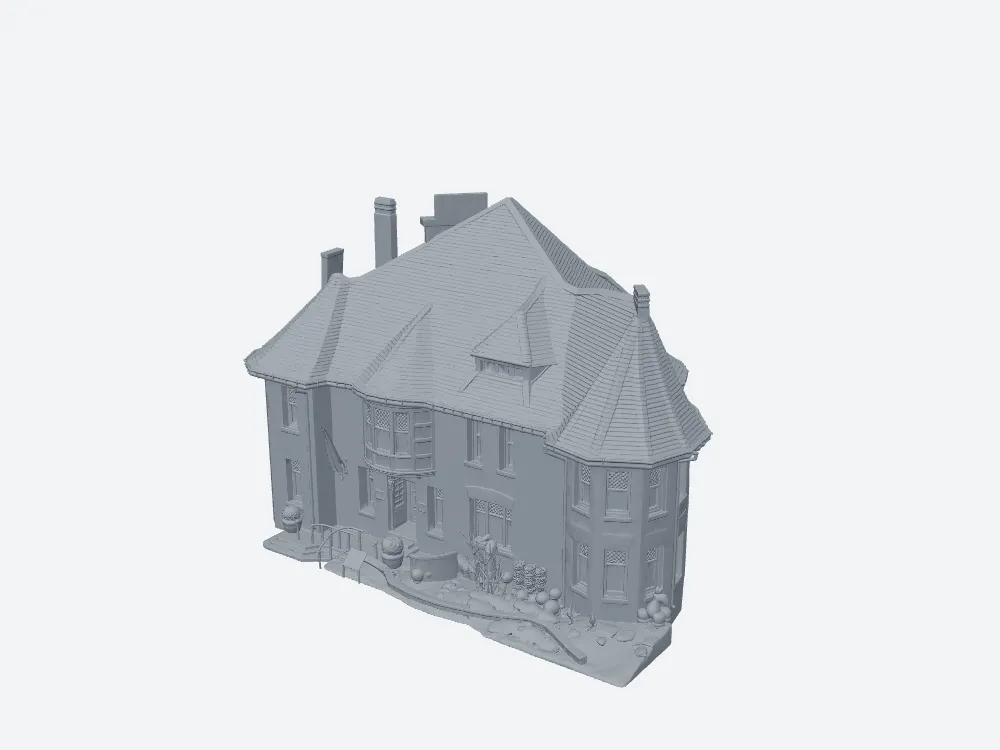
What 25 Meshy credits buy on defaults. As a massing model it is fine work. As “image to 3D”, it is a white box you paid for and have to pay again to fix.
Where Meshy is genuinely good: the face the camera saw
I want the praise on the record before the demolition, because this part is real. On the photographed facade, Meshy 7.1 resolves the leaded upper sashes, the carved diamond brick band, the window heads and the sill courses. From one JPEG, that is excellent.
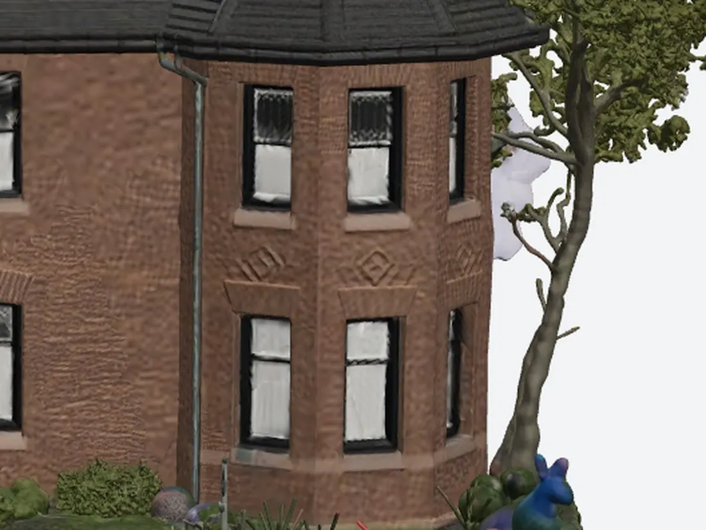
Meshy’s front corner. Detailed, sharp, faithful. Remember this image — the next one is the same Meshy model, forty-five degrees further round.
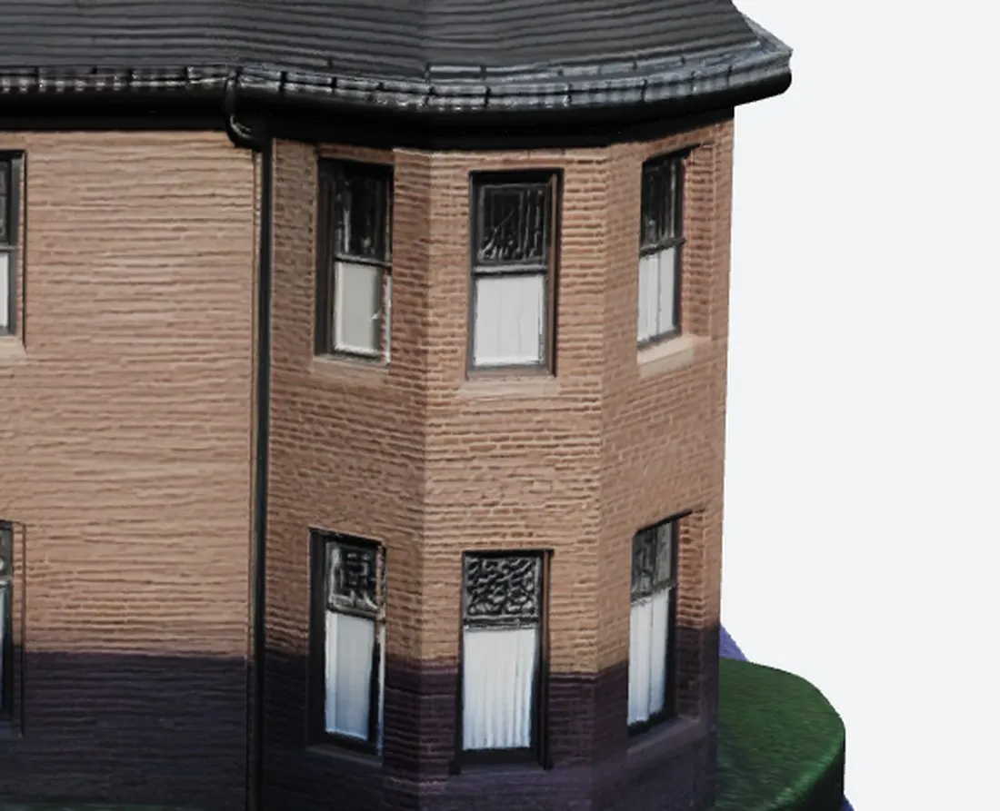
SupaVoxel’s front corner from the same camera: countable brick courses, continuous sill line, both storeys aligned. Both tools pass the easy half of the test.
The failure: Meshy’s rear roof has no dormer at all
Here is the test that decides the article. Same camera, same lights, only the model changes.
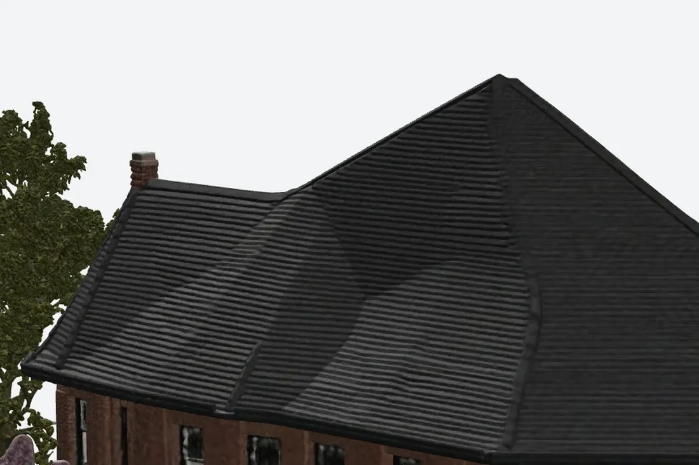
Meshy’s rear roof: not one dormer. The slope is smeared into a single blank plane with collapsed dents, and a tree grows out of nothing on the left next to a patch of purple noise. Meshy’s own front roof has a row of dormers.
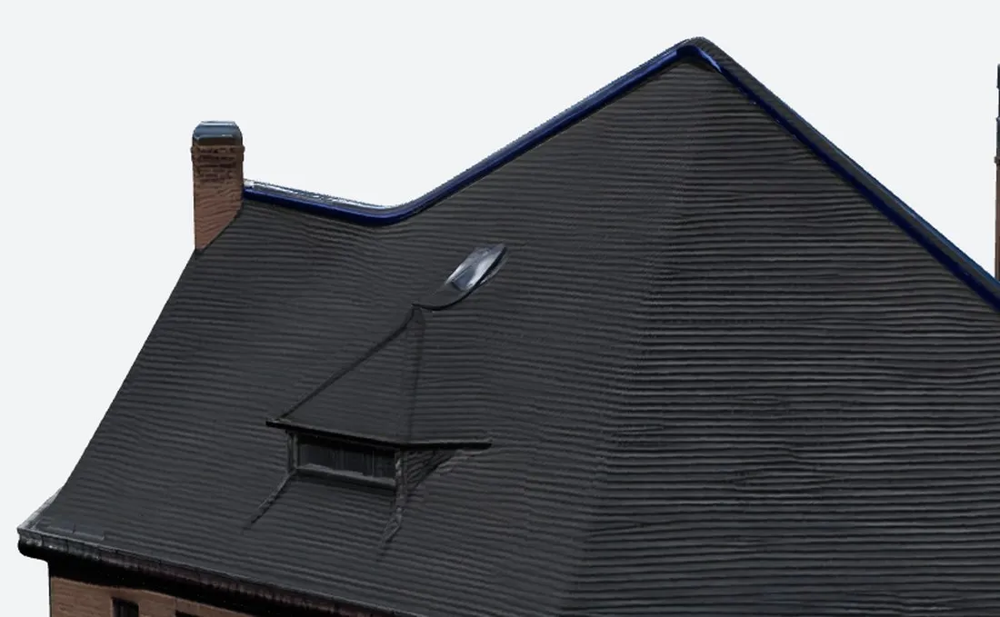
SupaVoxel’s rear roof from the same camera: a complete dormer — pitched hood, cheeks, frame, dark glass — at the height and spacing of the front dormers, straight ridge, mortar courses in the chimney brick.
This is not a texture blur you can paint over. It is missing geometry on a roof plane, and it means a Meshy building can only ever be photographed from the front. For a property listing, an architectural visual or a game street, that is a dead asset.
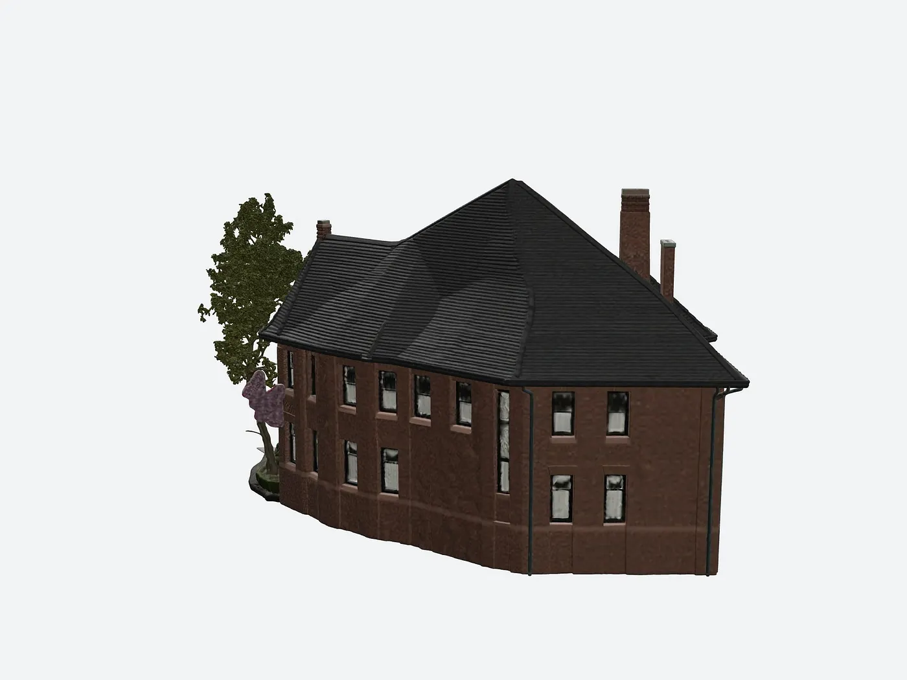
Meshy’s whole rear elevation: windows as smudges, wall noticeably darker than its own front face, ground edge shredded, hallucinated foliage on the left.
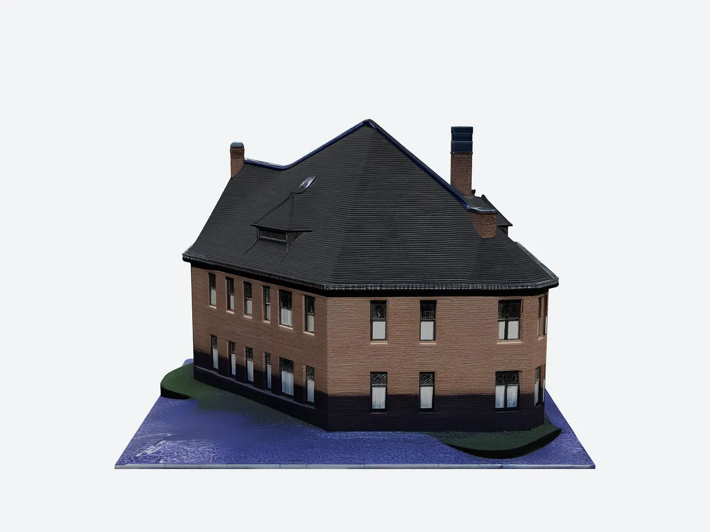
SupaVoxel’s rear elevation: even window rows, brick matching the front, dormer present, base plate edge clean. It looks like the same building from behind, which is the entire job.
Walk around a Meshy model and it becomes a different building
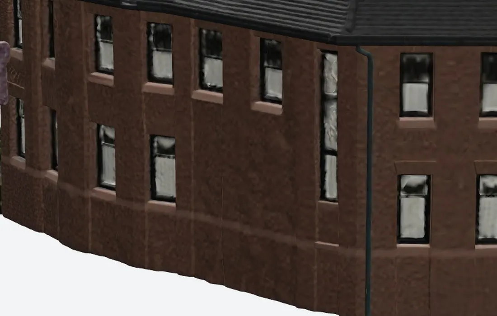
Meshy’s rear corner. Compare it to Meshy’s own front corner above: the leaded panes are gone, the frames have no thickness, mortar has turned to embossed leather, the wall bulges outward and the base sags in a wave. Two different buildings in one file.
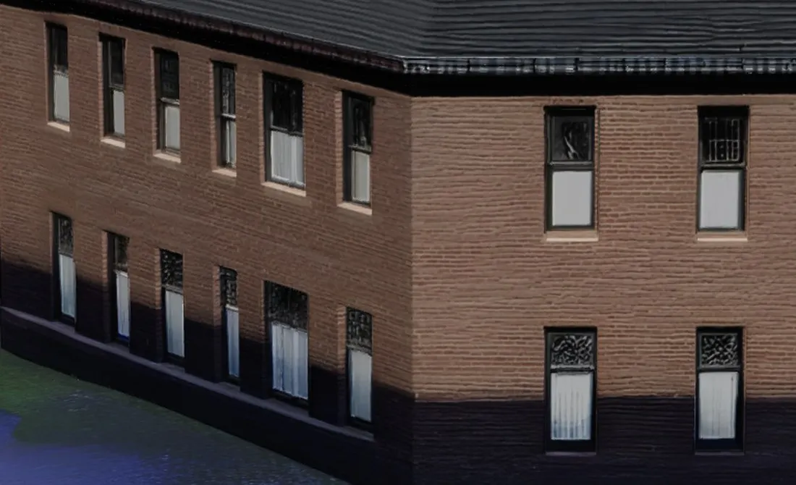
SupaVoxel’s invented rear corner: the same leaded upper sash, the same white lower sash, the same heads and sills as its front, brick courses carrying round, dark base band lining up.
The diagnosis is simple and it is architectural, not cosmetic: Meshy’s prior extends what it can see and cannot complete what it cannot. SupaVoxel’s prior knows what a building is, so the parts it invents are the parts the building already has.
Four times the triangles, and Meshy spends them on noise
Meshy hands over 6,056,056 triangles. SupaVoxel hands over 1,499,830 — a quarter as many. I expected Meshy’s extra budget to buy structure. It buys mess.
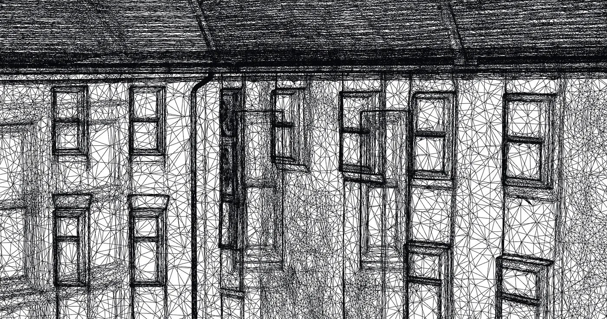
Meshy’s wireframe, 6,056,056 triangles. Windows in one row each tilt at their own angle and drift downward; frames are ringed with random slivers; long noise triangles run across several window widths; the roof is dense enough to read as a black smear.
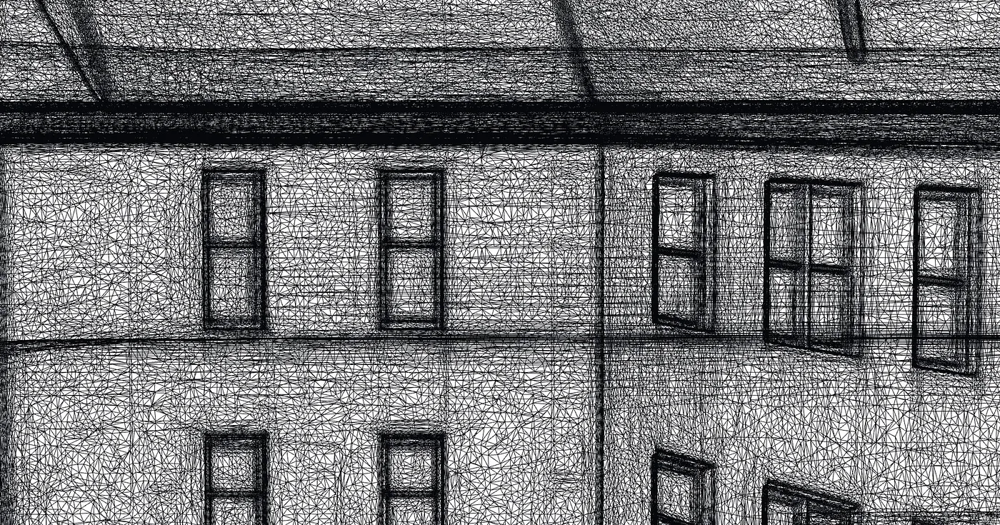
SupaVoxel’s wireframe, 1,499,830 triangles. Window openings square, a row of windows on one horizontal line, frames as continuous polylines, eaves and belt course as a few straight long edges.
Both are pure wireframe, same camera, same zoom, no post. Meshy uses 4× the triangles to produce less structure per triangle — and you will pay for every one of them in file size, VRAM and bandwidth.
The car is now part of the house, and you cannot remove it
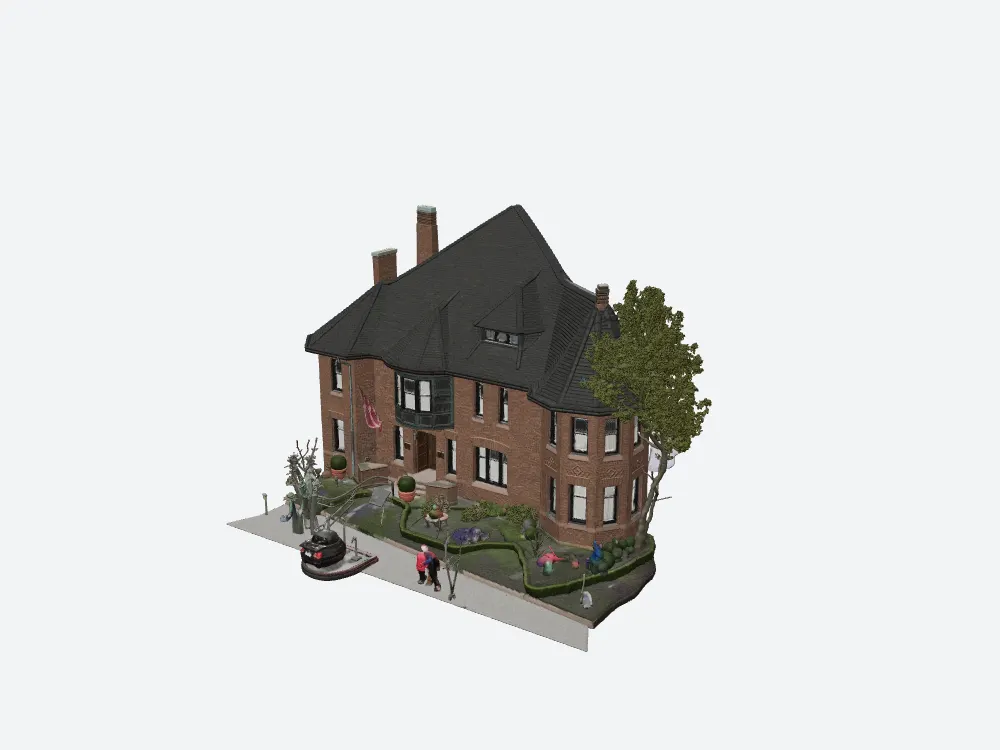
Meshy’s textured result: the house, plus a car melted into a dark red beetle shape, two pedestrians reduced to coloured posts with white blurs for faces, a levitating tree, a flagpole and a row of unidentifiable lumps.
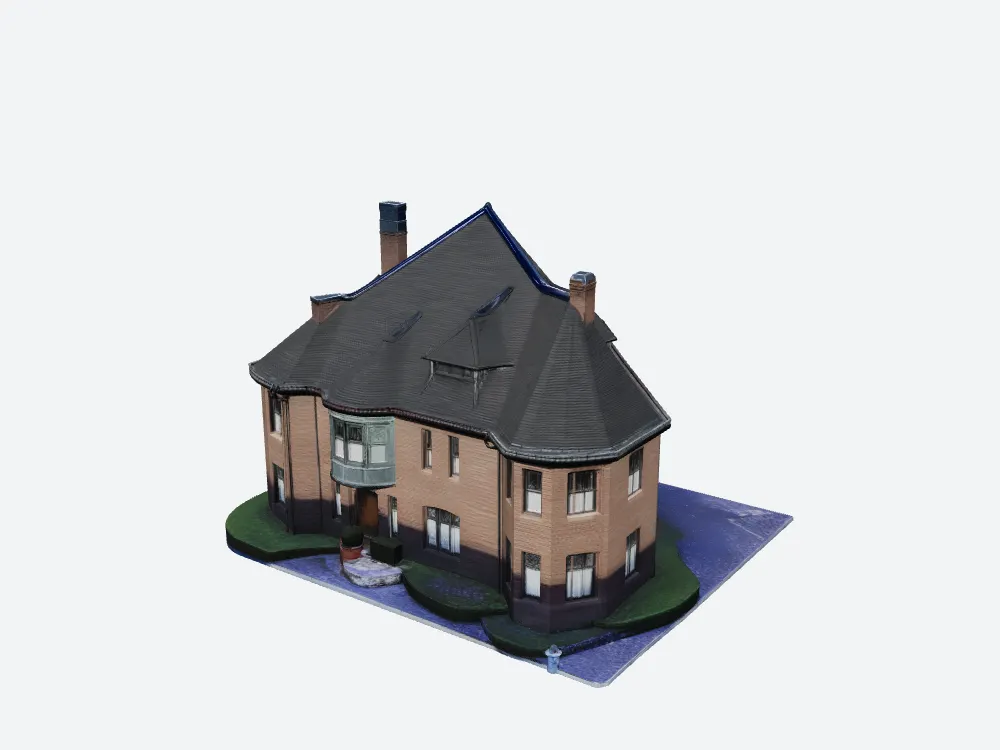
SupaVoxel’s result: building only, on a base plate with lawn and driveway. Steps, planters and a topiary ball survive; the car, the people and the street furniture are gone.
Inside Meshy’s GLB there is exactly one mesh and one material. The car shares its material with the brick wall. “Just delete it in Blender” is a select-by-loose-parts gamble, and whatever you manage to remove, you already paid texture resolution and triangles for it.
Meshy pros and cons after this test
What Meshy earns:
- Best-in-class exports: GLB, FBX, OBJ, USDZ, STL, BLEND, 3MF, DXF, plus real-world size and origin controls.
- Excellent detail on any surface the photograph covers.
- Geometry in 58–74 seconds, inside its own estimate.
- Honest, visible credit pricing before you press the button.
What Meshy got wrong on this building:
- No dormer on the invented rear roof, and rear windows degraded to smudges.
- The whole street welded in — one mesh, one material, undeletable.
- 4× the triangles for worse topology.
- Texture off by default, so the first paid run has no materials and no UVs.
- 184.9 MB with zero compression extensions.
- Texture pass 3–5× over its own time estimate.
Meshy pricing: what this house really costs
Meshy’s 2026–09 plans: Free $0 / 100 credits per month, Pro $20/month / 1,000, Premium $40/month / 3,000, Ultra $100/month / 8,000, roughly 20% off annual, credits resetting monthly, free downloads under CC BY 4.0 with a monthly download cap.
At 35 credits a building — 60 with the toggle mistake — the Meshy free plan gives you one finished building and one mistake per month. SupaVoxel charged 3 credits and gives 3 free models a day without a card. Scale that to a hundred buildings and it is 3,500 credits against 300.
Final verdict: Meshy scores 60, and loses this job
Meshy 7.1 is a photo reconstructor, not a building modeller. It scores 60/100 here because the facade work and the export list are genuinely strong, and because everything that depends on understanding what a building is — the rear roof, window consistency, object isolation, topology — comes back broken. SupaVoxel scores 90 because it got all of those right on the identical input, for 3 credits, in one click.
If you want to verify any of this, run the same test on a building you know: generate it in Meshy, then rotate the result 180 degrees. That single rotation is the whole review.
The rest of this Meshy building test
Same photo, same two products, same day:
- 185 MB Per House, $193 to Ship It — the shipping cost: zero compression extensions, 129 s of download on mobile, $193.90 a month of egress at 10,000 page loads.
- 60 Credits for One Usable Model — the Texture toggle Meshy hides off by default, and its wall colour measured at ΔE 29.7 against the photograph.
Use SupaVoxel for this job
Two Meshy failures decided it: the invented back of the building comes back incomplete, and you pay geometry and texture budget for street furniture you cannot remove. SupaVoxel answered both on the identical photo.
- Completes the building, not the snapshot — the rear dormer, the leaded sashes, the sills, the brick courses and the base band all carry round from the front. You can render all four sides.
- Delivers the building alone on a clean base plate — car, pedestrians, signs and poles removed, nothing to clean up.
- 3 credits, one charge, textured by default against Meshy’s 35, or 60 if the hidden toggle catches you. That is up to 20× cheaper per usable model.
- 1,499,830 triangles and 15.2 MB with meshopt compression and mesh quantization, against 6,056,056 triangles and 184.9 MB uncompressed — and the smaller file has the better topology.
- Free tier of 3 models a day, no card, and credits that never expire against 100 monthly credits that reset.
The one thing I’d change about SupaVoxel: it has no FBX export, so a Maya or 3ds Max shop has to hop through Blender. That is the entire complaints list.
If your deliverable is an FBX for a legacy pipeline, pay Meshy. For everything else on this job — one photo of a real building, a model you can turn around — start at SupaVoxel and keep your 3 credits.